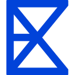

Четыре способа дать агенту руки. Каждый пробуем сразу –
сначала я показываю, потом десять минут подключаете себе.
| Занятие | Модуль 4 · Персональный ИИ-помощник |
|---|---|
| 4.1 | Контекст и концепция ИИ-помощника |
| 4.2 | Интеграции с внешними системами |
| 4.3 | Скиллы и повторяемые инструкции |
| 4.4 | Помощник, который работает круглосуточно |
Ставить нечего, открыл сайт и работаешь. Подключаются облачные сервисы: почта, календарь, диск. Файлы на вашем компьютере он не видит, результат остаётся в переписке.
То же самое, но программой на компьютере. Здесь ему можно дать папку – и результат он сложит файлами, а не в чат. Агент работает с файлами в выбранной папке.
Коннектор – готовый мост между приложением и вашим облачным аккаунтом. Внутри тот же доступ, что мы будем настраивать руками весь вечер, только собранный заранее.
Один вход через Google – и агент видит сразу три сервиса. Читает входящие и готовит ответы, показывает неделю и ищет окна, работает с файлами в облаке. Наталья – заказы магазина, Ольга – занятия, Павел – письма учеников.
Тот же вход через Google, но уже про содержимое: правит таблицы, собирает документы и презентации прямо из чата. Артём – таблицы с клиентами, Мария – сценарии.
Записывает встречи и отдаёт расшифровку с решениями. Алексей – созвоны с админами, Наталья – консультации: агент достаёт из разговора задачи и договорённости. На бесплатном плане – заметки за последние 30 дней.

Ищет не по словам, а по смыслу, и возвращает текст страниц целиком. Ресёрч темы, мониторинг, сбор фактуры.
Заметки, базы, контент-планы. Кто ведёт материалы там – работает с ними прямо из чата, не открывая Notion.
Монтаж видео. Марии и Ольге – сборка роликов и заставок без видеоредактора, прямо из чата.
Серверов десятки тысяч, и каталоги обновляются каждый день. Правило простое: сначала ищем готовое, и только если не нашли – подключаемся по ключу вручную.
glama.ai/mcp/servers · smithery.ai · pulsemcp.com/servers · mcp.so. Поиск по названию сервиса и по задаче.
«Найди MCP-сервер для такого-то сервиса, сравни варианты и скажи, какой живой и кто автор». Он сам сходит в каталоги.
Каталог на русском – mcp-catalog.ru. У крупных сервисов бывает свой официальный сервер: ищите раздел MCP в документации.
У сервиса есть витрина для людей – сайт с кнопками. И есть служебный вход для программ: туда приходят не мышкой, а запросом, и получают не картинку, а данные. Этот вход и называется API.
Коннектор и MCP кто-то сделал за вас, и список таких сервисов ограничен. API есть почти у всего – у банка, у магазина, у сервиса рассылок, у вашей CRM. Освоив этот способ, вы перестаёте зависеть от того, позаботился о вас кто-то или нет.
Зарегистрироваться, найти в кабинете раздел API, создать ключ и сказать агенту, к какому сервису подключаемся и что нужно сделать. Код пишет он.
Иначе через неделю вы не вспомните, что и как подключали, а агент не догадается, что у него вообще есть этот сервис. Два шага, полторы минуты.
Отдельный документ на каждый сервис: как подключались, где ключ, что этот сервис умеет, какие запросы к нему работают, что делать при ошибке. Пишет его агент, не вы.
В вашем главном файле правил: «есть такой сервис, инструкция там-то, если я прошу вот такое – иди туда». Без этой строки агент инструкцию просто не увидит.
Показываю на своей учебной доске: мой агент работает с моим доступом. Одна команда — и содержимое сервиса меняется.
Сейчас это была моя учебная доска, и всё восстановимо. В вашей CRM на её месте были бы клиенты. Четыре контроля, которые ставятся до того, как вы дадите агенту боевой доступ.
Эти сервисы не подключаются в две кнопки, поэтому здесь не слайд, а подробная инструкция для вашего агента. Скачиваете файл, отдаёте агенту – он сверяется со свежей документацией, ведёт вас по шагам, складывает ключи в .env и собирает у вас скилл.
Выберите сервисы, которыми вы пользуетесь, и проверьте каждое подключение рабочим запросом.